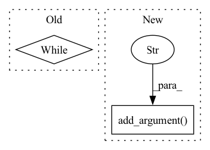

Pattern ID :25091

Before Change
bag_ins_list.append([bag_label, bag_vector])
bag_ins_list = shuffle(bag_ins_list)
test_pos = 0
while(test_pos):
bags_list, test_list = cross_validation_set(bag_ins_list, fold=10, index=1)
pos_c = 0
for fold in test_list:
pos_c = pos_c + fold[0]
After Change
parser.add_argument("--datasets", default="musk1", type=str, help="Choose MIL datasets from: musk1, musk2, elephant, fox, tiger")
parser.add_argument("--lr", default=0.0002, type=float, help="Initial learning rate")
parser.add_argument("--num_epoch", default=40, type=int, help="Number of total training epochs")
parser.add_argument("--cv_fold", default=5, type=int, help="Number of cross validation fold")
parser.add_argument("--weight_decay", default=5e-3, type=float, help="Weight decay")
args = parser.parse_args()
if args.datasets == "musk1":
In pattern: SUPERPATTERN
Frequency: 4
Non-data size: 2
Instances
Fragment ID: 76903381
Project Name: binli123/dsmil-wsi
Commit Name: 9904a494d25725384a486cb0c262c73de91b327a
Time: 2020-11-19
Author: bli346@wisc.edu
File Name: train_mil.py
M Class Name: AnonimousClass
N Class Name: AnonimousClass
M Method Name: main(0)
N Method Name: main(0)
M Parent Class:
N Parent Class:
M File Name: train_mil.py
N File Name: train_mil.py
M Start Line: 144
M End Line: 177
N Start Line: 114
N End Line: 168
'>
Before Change
)
time.sleep(0.3)
while True:
pybullet.stepSimulation()
if __name__ == "__main__":
After Change
parser = argparse.ArgumentParser(
formatter_class=argparse.ArgumentDefaultsHelpFormatter,
)
parser.add_argument("--pause", action="store_true", help="pause")
args = parser.parse_args()
pybullet_planning.connect()
pybullet_planning.add_data_path()
'>
Fragment ID: 76903380
Project Name: wkentaro/safepicking
Commit Name: 22701567577a8f4148156cd434c155d3c10d24f0
Time: 2021-03-16
Author: www.kentaro.wada@gmail.com
File Name: examples/goal/bin_packing_no_act.py
M Class Name: AnonimousClass
N Class Name: AnonimousClass
M Method Name: main(0)
N Method Name: main(0)
M Parent Class:
N Parent Class:
M File Name: examples/goal/bin_packing_no_act.py
N File Name: examples/goal/bin_packing_no_act.py
M Start Line: 61
M End Line: 122
N Start Line: 51
N End Line: 122
'>
Before Change
bag_ins_list.append([bag_label, bag_vector])
bag_ins_list = shuffle(bag_ins_list)
test_pos = 0
while(test_pos):
bags_list, test_list = cross_validation_set(bag_ins_list, fold=10, index=1)
pos_c = 0
for fold in test_list:
pos_c = pos_c + fold[0]
After Change
parser.add_argument("--datasets", default="musk1", type=str, help="Choose MIL datasets from: musk1, musk2, elephant, fox, tiger")
parser.add_argument("--lr", default=0.0002, type=float, help="Initial learning rate")
parser.add_argument("--num_epoch", default=40, type=int, help="Number of total training epochs")
parser.add_argument("--cv_fold", default=5, type=int, help="Number of cross validation fold")
parser.add_argument("--weight_decay", default=5e-3, type=float, help="Weight decay")
args = parser.parse_args()
if args.datasets == "musk1":
'>
Fragment ID: 76903382
Project Name: binli123/dsmil-wsi
Commit Name: 9904a494d25725384a486cb0c262c73de91b327a
Time: 2020-11-19
Author: bli346@wisc.edu
File Name: .ipynb_checkpoints/train_mil-checkpoint.py
M Class Name: AnonimousClass
N Class Name: AnonimousClass
M Method Name: main(0)
N Method Name: main(0)
M Parent Class:
N Parent Class:
M File Name: .ipynb_checkpoints/train_mil-checkpoint.py
N File Name: .ipynb_checkpoints/train_mil-checkpoint.py
M Start Line: 144
M End Line: 177
N Start Line: 114
N End Line: 168